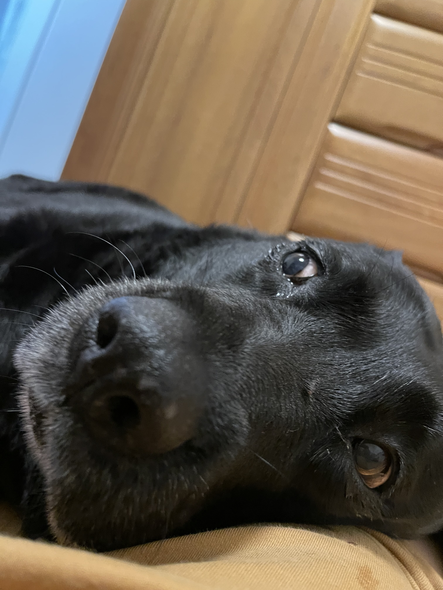
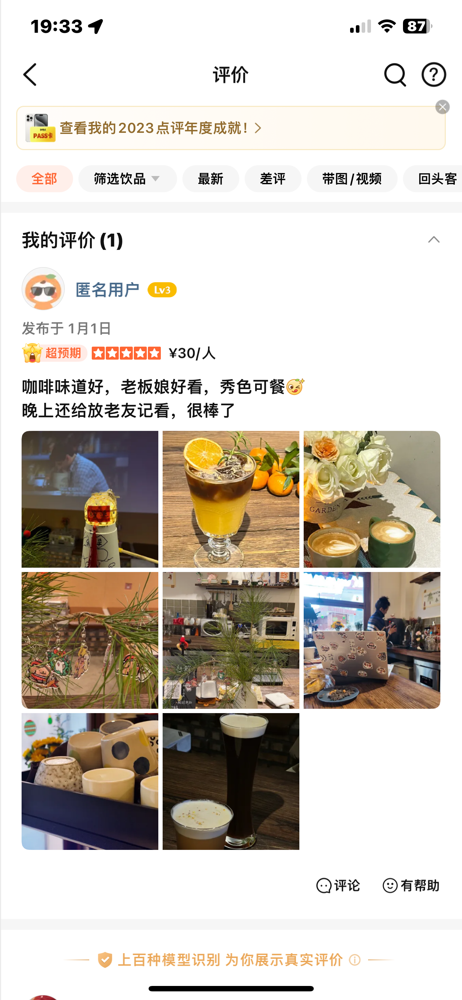

现在是2023年12月31日 23:18，我坐在华南家里的床上开始写2023年的年终总结，现在的我每周末仍然会回到父母家住一天，倒也不是恋家，只不过独自一人的周末总有些无聊，不如回家陪父母还有大格格。这周刚好是元旦放假，昨天一回家就发现父母在刷墙，等我回去帮忙呢，于是干了一下午的活。说实话修缮房屋挺有意思的，我以前理解不了外国影视作品里男人总自己修房子是什么心态，一直以为是为了省钱，后来尝试了之后发现自己动手不仅丰衣足食，还能获得很独特的生活乐趣，怪不得我小时候我爸妈总喜欢折腾家具什么的，今天搬这里明天搬那里，还隔三差五给地板刷漆，都是人生的乐趣呀！
我好久没干活了，带着愉悦的心情干完活我发现人果然还是需要劳动的，无论对身体还是大脑都有好处。
劳动已经是昨天的事了，于是今天我躺了一天。
其实我是懒得写这篇文章的，一是因为不太想回忆这样平平无奇的一年，没劲；二是好久没正儿八经写过东西了，很懒。不过毕竟一年才写一篇，我劝自己忍一下，写出来对谁都好🤣
家庭没有什么变化，我们每个人都老了一点，大格也不例外，她现在每天睡的时间越来越久，肉眼可见的岁数大了，不过吃东西和要东西吃的时候仍然活力满满，我看她就是懒的。前一段时间腿上的问题严重，养成了下午不出门的习惯，每天只有早上出去一趟，最近好一点了，有时候心情好一天出门好几次。但是我们都知道，问题始终存在，四楼对于她来说有点高了，这个问题不解决，真正的问题就不能解决。

父母的生活很稳定，他们每天闲的没事就给我张罗相亲，除此之外估计也没什么压力。然而这并不能改变父母一天天变老的事实，我无法回忆起十年前他们的样子，但是我可以确定那时的他们的背没有像现在这样弯，身型也没像现在这样小，我很开心他们可以对自己的生活满意，这也许是一个人能期待的最好的了吧。
姥姥姥爷的生活看起来也不错，我偶尔去姥姥家，他俩一般都是正准备吃午饭，这俩人吃饭太晚了，快下午两点才吃午饭。看到我很开心，一遍一遍喊我和他们一起吃。一月中旬去姥姥家发现他们家楼下被政府选中进行改造了，装饰完确实好看很多，以前跟贫民窟似的，现在都看不出来是老小区，确实是好事。我在他们家阳台往下看，以前的菜园子现在都搞成小花园了，我儿时的回忆又少了一大截。小时候我就和我弟俩人经常在姥姥家楼下的这片菜园子里探险，有的有猫，有的有狗，有的有脾气坏的老太婆，现在都没了。
姥爷前几年查出有肠癌，还动了刀，之后就又恢复了活力，我看他饭量相当可以，就是酒戒不掉。喝就喝吧，我妈还让我给买两箱啤酒呢，千金难买爷开心是吧。

工作没什么变化，还在GW，好在没失业，坏在十分无聊。以前总听说大环境不好大环境不好，都扯淡呢，那时候再不好也没今年差呀，今年有很多人都失业了，小公司欠薪的倒闭的一大堆，我还算幸运，进了个大公司，也没太多破事，目前工资还照常发着呢，也不知道能坚持多久，就是加班这事让人很烦，不过目前来看，除了忍着之外也没什么好办法。今年经济不好真不是说说而已，我年中的时候打算看看机会，招聘软件上谈的寥寥无几，面试更是只有一个，当然后来也没成，就一直没走。惠姐那边据说要解散，让他们自谋出路；翔哥更惨，有一天我下午出去溜达，在路边碰到他了，我俩聊了挺久，他说他们已经五个月没发工资了，我无言以对，感觉自己没有资格安慰他，只是感叹自己运气好，暗暗骂一句：要啥自行车。
这种情况下，我对工作本身也就没什么真正的不满了，不然能怎样呢？失业去吗？
不过这份工作确实有些无聊，GW这个公司和很多民营企业一样，它大部分是由笑话组成的，剩下的则是有表演型人格的宦官和光屁股的国王。如果你在私企上过班，那你应该为我这个比喻打满分。
而我呢，就是笑话的一部分，我为什么说这份工作无聊，原因是这个岗位的诞生是为了创造一个岗位而出现的，用我们组长的话说，就是先把坑占上，要不过段时间不给HC了就招不了人了，他说的很有道理啊，后来果然只进不出了。但是不知道他当时有没有想过，招了这些人但是又没有什么任务该怎么交代，我猜他根本没在意这些，不过如果是我的话我也不在意，甚至想再多招几个，反正不是我掏钱，给大家发工资还不开心么？
所以自从我进入GW之后，我就没什么任务，绝大多数时间是在摸鱼。偶尔有一些调研的工作，工作量也不大。我也是从CV做到现在LLM的NLP，从人工智能这头跨到了人工智能那头。其实今年的一个大事就是ChatGPT的爆火，我们也是从这里开始全面转向LLM领域，接触了很多新鲜有趣但是触不可及的东西。从这个角度来看，GW的平台还挺好，我们算法躲在角落里也没人管，压力不算大，还有工资拿。不过LLM火了之后我们的工作就多了起来，因为领导知道了这玩意厉害，就让我们给整一个，要整个好的，但是有一个前提：没有钱。
其实这也不是第一次见识了，话说我们干算法的到现在还没个训练服务器呢，一张卡都没有，说出去让人笑话。现在想不花钱整个好的，我表面是笑呵呵，实际上心里更开心，为啥呀？因为这就意味着出什么问题可以，任何问题都是钱的问题，或者说，都可以是钱的问题。
到现在有半年了吧，我们都在做LLM，以后应该也是差不多。不得不感叹，我们现在正处于人类科技的高光时刻之一，由人工智能带来的生产力水平发展终于迎来了第一次真正意义上的爆发。仅仅五年前，AIGC还是一个不怎么受欢迎的话题，那时候有CycleGAN，架构巧妙，结构精良，抛弃了VAE的种种限制，它面对深度神经网络，接受缺点拥抱能力，给当时的业界放了一场绚烂夺目的烟花。接下来几年连续诞生了各种效果惊人的GAN，然而从结果上来看，它们并不能为生成领域带来什么真正的改变，无法变现是始终围绕在产业周围的迷雾，而仅一山之隔的目标检测等方向则赚的盆满钵满。彼时对于国内的资本市场而言，无法变现就代表着一无是处，没人在乎对未来的影响力，甚至国内的几乎所有的学术机构、高校也流行着一股“不在没有商业未来的科研方向进行投入”的风气。
我觉得这种态度本身没什么大毛病吧，但是在OpenAI的案例面前就显得很现实，又很悲哀。
我对生成模型天然是有好感的，一是因为凭空变出一些有意义的信息这件事很神奇，二是因为我初入深度学习便是从CycleGAN开始的（其实是MaskRCNN和CycleGAN），所以当时对于生成模型成不了气候的事实我是蛮遗憾的。没想到仅仅五年之后，生成模型大放异彩，虽然是NLP的生成模型，but still. 而现在的检测识别呢，早就标准化了，没再剩下什么可探索的内容与方向，盈利自然也卷得要死要活。不过虽然AIGC大放异彩，但是盈利的道路依然荆棘丛生，从LLM的供应商到BC端客户之间仍然没有一个明确的业务模式可以参考借鉴，大家都在摸索，而悲观地说，这感觉和五年前有几分相似，每当潮流奔着钻牛角尖去的时候，大概率代表着接下来就是退潮的时候了。
别误会，我说的是国产LLM.
而我们的工作呢，就是把LLM的各种技术应用到现实中，但是没有需求。再一次，仿佛回到了几年前，行业里的所有人都举着个破锤子满场找钉子。
现在每天都在测试不同的模型，想要用极少的样本测出点结论，站在远处看这纯纯是搞笑，可是身在其中时又不觉得有什么荒谬的，说到底它只是工作，这世界上不觉得自己工作搞笑的除了老板之外又有几个人呢？
领导是傻逼，但我能理解他们的难处，但不妨碍他们是傻逼。
在这样的背景下，我萌生了退意。这个念头是在一个很不相关的情景下诞生的，当时我在年终的旅行中，在香格里拉，突然意识到这份工作没有未来，因为它根本没做出什么成绩，也根本没办法做出任何成绩。于是我就想，我以后干什么呢？我的优点有哪些呢？我英语很好，还擅长白话，又是技术背景，这几个结合能干什么呢？我第一个想到的就是有技术背景的销售，也许行业会有需求？可是我并没有找到真正匹配的这种岗位，我还要再看看，我希望明年可以找到一个真正有发展的职业方向并为之努力，这算是2024年的第一个愿望了吧。
我尤其不想谈这一部分，它失败的原因是压根儿就没有任何关系。
我自认为能看透自己的内心，我想在大多数方面应该是可以的，而对于感情，无论是亲情、友情还是爱情，我好像一点儿也不懂自己。我知道，这世界上有一种声音ta会说：你懂不懂自己不关键，你懂得别人才关键。
关于这个问题（如果它算一个问题的话）其实没什么好争论的，这种十分主观的所有问题都不值得浪费时间在说服别人上，事实上在我的世界观里，任何问题都不值得浪费时间争论，意见不合，分道扬镳就好，这世界上有那么多人，你凭什么要求别人理解你呢？
说回“懂自己还是懂别人”上来，我的人生哲学的终极目标就是了解关于自己的一切，我希望能够完全看透自己的内心，所以我当然在意这一点，而且如果一个人连自己都看不清楚，ta又如何能看清楚别人呢？
不过看清自己还是看清他人，其实对我的日常生活而言并没有什么区别。在和别人的交往中我的原则很少，保持礼貌是其中最重要的一条。我相信对别人礼貌是非常重要的，因为礼貌是“得体”的一部分，我希望自己保持一个得体的状态；而当它成为一种习惯之后我就愈发觉得这个决定很正确，可以让对方开心（至少不会感觉被冒犯），我也没什么损失，何乐而不为？
但是很显然并不是每个人都像我这样想。说实话，刚开始我还抱怨一下，现在早已习惯。虽然浪费时间浪费精力，但是它其实也是有点好处的：由于见了很多人，所以现在看人很准🤣，不得不说面相还是有相当道理的。
每个人随着年龄的增长都会形成自己的处世哲学，然而绝大多数人都很难描述出自己的准则，我则是觉得我国的和平共处五项原则很好，可以拿来当作为人准则，因为毕竟国家就是一群人嘛，五项原则分别是：
而这五项原则对应到个人呢，基本上相当于：不占便宜，保持尊重，不卑不亢，来日方长。这几个字看起来简单，好像每个人都是这么做的，如果真是那样的话，王阳明就不会那么出名了。在很多情况下，我们只是知道而已，而真正有价值的，是知行合一。
除了如何与人相处之外，今年我还懂得了一个非常重要的道理，那就是做自己。其实以前没懂这个道理，我也是这样做的：不在乎别人的想法，只关注自己。后来我开始在意别人的想法，揣测别人严重的自我，开始对自己不满，开始怀疑和否定自己，经历了很久这种拉扯。再后来慢慢明白，他人的眼光几乎相当于废话，因为就算你是人民币也总有人不喜欢，而且就算你愿意改变，也无法改成每个人都满意的样子，从根本上讲，问题不在我。于是我又回到了这种不在乎的状态，但是和曾经不同，以前的我是“滚你妈的老子不在乎”，而现在的我是“抱歉，我无法在乎”。
所谓看山是山，看水是水；看山不是山，看水不是水；看山还是山，看水还是水。
且视他人之疑目如盏盏鬼火，大胆地去走你的夜路。
如今已是我人生的第34个年头，这世界的规律早已烂熟于心，你应该不再寄希望于他人，如果我幸运，我为自己感到开心，如果我不幸，我深感遗憾，至于其他人，
抱歉，我无法在乎
今年年末，我鼓起了勇气，出去旅游去了。好久没出远门了，确实需要点勇气，上次旅行应该是21年去成都见小何，一转眼2年多过去了，真快啊。说起小何，我们最近几年的联系变得越来越少，不过还是有联系的，她23年回家乡搞了一个咖啡店，我说你在县城里开咖啡店，有人去吗？她说还挺多呢，现在也每天忙很久。本来打算去找她玩的，但是一想她那地方没什么好玩的，还耽误她开店，也就作罢了。后来我还给她写了个点评，看见“秀色可餐”四个字她可是高兴坏了。

12月上旬我突然想起来自己的年假还没休，我去问HR年假不休能给多少钱，她说给很少的钱，比工资少很多。我想，那还不如我出去玩了，于是就开始看目的地，我一开始想去海南冲浪，但是我发现冲浪不能戴眼镜就放弃了；后来想去广东，我喜欢粤菜（有人不喜欢粤菜吗？），但是我不太想去人多的地方，而且就在这时我看到了梅里雪山的照片，于是广东和江南以及其他的所有可能就都被我放弃了。
12月的中旬基本沉浸在找攻略中，然后定了去程的机票和第一天的酒店。因为从大连飞到香格里拉，基本是斜跨中国了，所以路上就得一天，来回两天，我一共5天假期，实际游玩时间只有三天。为什么假期只有5天呢？这就又得说回到GW的狗，它规定当年的年假要等到下一年才能休，也就是我今年只能休去年不满一年的年假，我还额外请了一天事假呢。
总之呢，2023年12月19日，我从大连出发去香格里拉看雪山了。旅途中的人和事我都拍了下来，放在了视频里。我很兴奋，每天只睡很少的觉，因为我很久没有出去玩了。我也不再像年轻的时候出去玩那样嫌累哪也不想去，现在的我巴不得一整天都在路上，好像感觉不到累一样。
淡季的香格里拉很好，没有高反，我甚至想踢一场高原上的足球，我甚至想一去不返。不过我的鞋子穿的不对，我穿了双匡威all star，差点没把我脚冻掉，我记得在松赞林寺冻得我脚痛，不得不在太阳下停下缓缓，那时候我还穿了两双袜子呢，后来实在受不了了就回旅店了。不过那天其实时间正好，如果再晚一些就超出退房的时间了，我在旅店烤着火坐了一会才出发去汽车站坐大巴到飞来寺，这大巴一趟三个半小时，坐得我腰直疼。我在车上睡得也很少（因为精力充沛！），一路上看着车窗外的崇山峻岭还有蜿蜒曲折的盘山路不停感叹，没有国道的时候，那里的村民是如何走出大山的啊！没有国家电网的时候，大山里的人是如何了解外面的世界的呢？
我这人好胡思乱想，当时我的脑海中就出现了一个几百年前出生在梅里脚下的人，他的一生都在雪山下度过，他一辈子只见过很少的人，他从来没有见过平原和大海，甚至没有听说过平原和大海，他不知道大山外面是什么，也许是无穷无尽的大山吧。如此过完一生，他会感到不甘心么，他会觉得这个世界不公平吗？
我始终没有答案，我想人有自己的局限性，时代有自己的局限性，时代中的人则更是局得不能再局。
后来到站了我就下车了。
当天入住了一个还算可以的宾馆，因为可以从房间的阳台看到半个雪山，所以价格稍贵一些。不过没有地暖，很冷，洗澡水又很烫，草草洗了头就睡觉了。
第二天一睁眼，没到八点，爬起来洗漱一番刚好赶上看日出。虽然冬天的天气总体较好，但是算上封路情况，其实能看到日照金山也是不容易的，我很幸运。
在酒店里看日照金山是很明智的选择，外面太冷了，我还可以回房间暖和暖和。尽管在来之前看过很多日照金山的图片，但是当我亲眼看到阳光一点点撒到卡瓦格博峰的时候眼睛还是受到了刺激，不由自主地淌眼泪。当时我的内心很平静，没有什么情感，单纯是因为那个景象太美了，我后来想，可能是因为我的眼睛没见过这种画面，它俩冷不丁一见有点受不了。
所以日照金山就是：平静地流泪，心中一片空白。
从那之后我突然明白了为什么人们会说人性中存在“神性”，在这种景观面前你很难不把它比拟成“神迹”，除了至高无上，又有谁有能力创造这样的景象呢？

2023年，我成为了一个独立开发者，并且开发了两个APP，虽然没有什么知名度，也没有多少人用，但毕竟万事开头难嘛，希望2024年能有更多好点子给我实现。
2024年我希望自己能写点东西，也许写一个小剧本，所以最近在看关于剧作的书，我的点子挺多，可总是留不下来，这始终是一个遗憾。我看我们的人生也是这样，以前的我总想要把希望寄托于未来，寄托于新的事物上，现在的我觉得应该更关心当下，把已经拥有的抓牢。这个想法如此，其余所有事皆是。
关于家庭，我希望父母身体健康，我希望格格能减点肥，她也老了，她出生于2014年的9月1日，现在已经快10岁了，尽量活久一些吧胖狗狗！
关于工作，我现在已经有了换方向的想法，也许看看北上广的大模型toB销售，也许看看大模型的产品经理，如果顺利的话我又要背井离乡了，内心挺纠结的，不过怎么说呢，走一步看一步吧！
关于个人生活，就算我想，我也已彻底无法再寄希望于他人，然而我从未如此渴求内心的平静，任何人的影响都无法让我产生什么波动，我不认为这是失去“爱”的能力的表现，反而是觉得眼光变得更长远了。说到底，每个人真正能改变的都只有自己，让自己生活变好的唯一解决方案也只有让自己变好，这很难做到，那不如就把它当作我一生要修习的课题，慢慢来。
2023年过去了，我并不怀念它，我只是叹息时光的流逝，就像我不知从什么时候起不再期待未来，我只是和每个人一样，变得更老了一些，也变得更沉默一些，我希望你能意识到这个问题，我希望你能真切得认识到这个问题，我们都变成了另外一个自己，也都在缄默中抛弃了曾经的自己。